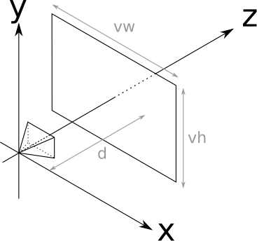

Kamera Konumu ve Yönelimi
Ray tracing ile çalışırken, sanal bir kameranın konumunu ve yönelimini tanımlamak önemlidir. Basitliği sağlamak için başlangıçta şu varsayımları yapacağız:
- Kamera orijinde bulunur: \( O = (0, 0, 0) \) olarak kabul ediyoruz.
- +Z ekseni ileri bakar: Bu, kameranın baktığı yönü temsil eder.
- +Y ekseni yukarı bakar: Yükseklik veya dikey hareketler bu eksen boyunca olur.
- +X ekseni sağa bakar: Yatay hareketler için bu ekseni kullanırız.
Bu varsayımlar, kamera konumunu ve yönelimi tanımlamayı kolaylaştırır ve kavramları anlamamıza yardımcı olur. İlerleyen konularda, daha karmaşık kamera konumlandırmaları yapabileceğiz.
Koordinat Sistemi Nedir?
Koordinat sistemi, bir konumu tanımlamak için kullanılan bir sistemdir. 2B ve 3B koordinat sistemleri en yaygın olanlarıdır:
- 2B Koordinat Sistemi: Noktalar \( (x, y) \) olarak tanımlanır.
- 3B Koordinat Sistemi: Noktalar \( (x, y, z) \) olarak tanımlanır.
x, y, z Ekseni: Bu eksenler, 3B alanda noktaların konumunu belirtir. x ekseni sağa, y yukarı ve z ileriye doğru uzanır.
Orijin: Koordinat sisteminin başlangıç noktasıdır ve \( (0, 0, 0) \) olarak tanımlanır. Bu nokta, diğer tüm noktaların ölçüldüğü referans noktasıdır.
Sağ El Kuralı: Sağ elinizi kullanarak x, y ve z eksenlerini yönlendirebilirsiniz. Başparmağınız x, işaret parmağınız y ve orta parmağınız z eksenini gösterir.

Viewport (Görüntüleme Alanı)
Viewport, kameranın önündeki dikdörtgen bir çerçevedir ve sahneyi nasıl gördüğümüzü belirler. Bu çerçeve, kameradan belirli bir mesafede ve Z eksenine dik olarak yerleştirilir.
Basitlik için şu değerleri kullanacağız:
- Viewport genişliği \( V_w \) ve yüksekliği \( V_h \) bir birimdir: \( V_w = V_h = 1 \)
- Kameradan mesafe \( d \) bir birimdir: \( d = 1 \)
Bu ayarlarla yaklaşık 53 derecelik bir görüş açısı (FOV) elde ederiz.

FOV Nedir? Görüş açısı, kameranın ne kadar geniş bir alanı görebileceğini belirler. İnsan gözünün yatay görüş açısı yaklaşık 180 derecedir.
Viewport boyutları ve kameranın mesafesi, FOV'u etkiler. Geniş bir viewport veya kamera mesafesi, daha geniş bir FOV'a yol açar.
Canvas - Viewport Dönüşümü
Canvas, piksel cinsinden ölçülen bir görüntüleme alanıdır (örneğin, 800x600). Ancak viewport, dünya birimi cinsinden ölçülür (örneğin, 1x1). Bu iki sistem arasında dönüşüm yapmamız gerekir:
Dönüşüm formülleri şunlardır:
\[ V_x = C_x \cdot \frac{V_w}{C_w} \] \[ V_y = C_y \cdot \frac{V_h}{C_h} \] \[ V_z = d \]Örneğin, canvas üzerinde bir piksel (200, 150) için dönüşüm yapalım. Varsayalım ki canvas boyutları \( C_w = 800 \) ve \( C_h = 600 \) olsun:
\[ V_x = 200 \cdot \frac{1}{800} = 0.25 \] \[ V_y = 150 \cdot \frac{1}{600} = 0.25 \]Bu durumda, piksel (200, 150) viewport'ta \( (0.25, 0.25, 1) \) noktasına denk gelir.
Ölçekleme (Scaling) Nedir? Bir nesnenin boyutunu büyütmek veya küçültmek için kullanılır. Örneğin, bir kareyi iki kat büyütmek için her bir kenarını iki ile çarparız.
Piksel Koordinatları vs Dünya Koordinatları: Piksel koordinatları ekranın çözünürlüğüne bağlıdır, dünya koordinatları ise sahnedeki konumları belirtir.
Neden Viewport'un Merkezi ile Canvas'ın Merkezi Hizalı? Bu, dönüşümlerin daha kolay ve simetrik olmasını sağlar, böylece nesneler ekranın ortasında doğru konumda görüntülenir.
Raylib Uygulaması
Raylib, grafik programlama için harika bir kütüphanedir. İşte basit bir 3D sahne oluşturmak için Raylib kullanarak bir örnek:
#include "raylib.h"
#include "raymath.h"
/*
* Ornek 02 - 3D Kureler Sahnesi
*
* Kitaptaki sahneyi raylib'in 3D fonksiyonlari ile olusturur.
* 3 kure: Kirmizi (0,-1,3), Mavi (2,0,4), Yesil (-2,0,4)
* Fare ile kamerayi dondurebilirsiniz.
*/
int main(void)
{
const int screenWidth = 800;
const int screenHeight = 600;
InitWindow(screenWidth, screenHeight, "Ornek 02 - 3D Kureler Sahnesi");
// Kamera tanimla
Camera3D camera = { 0 };
camera.position = (Vector3){ 0.0f, 2.0f, -6.0f };
camera.target = (Vector3){ 0.0f, 0.0f, 3.0f };
camera.up = (Vector3){ 0.0f, 1.0f, 0.0f };
camera.fovy = 53.0f; // Kitaptaki yaklasik FOV degeri
camera.projection = CAMERA_PERSPECTIVE;
SetTargetFPS(60);
while (!WindowShouldClose())
{
UpdateCamera(&camera, CAMERA_ORBITAL);
BeginDrawing();
ClearBackground(RAYWHITE);
BeginMode3D(camera);
// Kitaptaki 3 kure
DrawSphere((Vector3){ 0.0f, -1.0f, 3.0f }, 1.0f, RED);
DrawSphere((Vector3){ 2.0f, 0.0f, 4.0f }, 1.0f, BLUE);
DrawSphere((Vector3){-2.0f, 0.0f, 4.0f }, 1.0f, GREEN);
// Buyuk zemin kuresi
DrawSphere((Vector3){ 0.0f, -5001.0f, 0.0f }, 5000.0f, YELLOW);
// Koordinat eksenleri
DrawLine3D((Vector3){0, 0, 0}, (Vector3){3, 0, 0}, RED); // X ekseni
DrawLine3D((Vector3){0, 0, 0}, (Vector3){0, 3, 0}, GREEN); // Y ekseni
DrawLine3D((Vector3){0, 0, 0}, (Vector3){0, 0, 3}, BLUE); // Z ekseni
DrawGrid(10, 1.0f);
EndMode3D();
DrawText("3D Kureler Sahnesi", 10, 10, 20, DARKGRAY);
DrawText("Fare ile kamerayi dondur", 10, 35, 16, GRAY);
DrawText("Kirmizi: (0,-1,3) r=1", 10, screenHeight - 60, 14, RED);
DrawText("Mavi: (2, 0,4) r=1", 10, screenHeight - 42, 14, BLUE);
DrawText("Yesil: (-2, 0,4) r=1", 10, screenHeight - 24, 14, GREEN);
EndDrawing();
}
CloseWindow();
return 0;
}
Bu Kod Ne Yapıyor?
Kod, bir pencere açar ve üç adet küre çizer. Fareyi kullanarak kamerayı döndürebilirsiniz. Şimdi, bu kodun önemli satırlarını inceleyelim:
Kamera Tanımlama
Camera3D camera = { 0 };
Bu satır, bir Camera3D yapısı oluşturur ve başlangıç değerlerini sıfırlar. Camera3D, kamera konumunu ve yönelimi tanımlamak için kullanılır.
camera.position = (Vector3){ 0.0f, 2.0f, -6.0f };
Kameranın dünya koordinat sistemindeki konumunu ayarlar. Burada, kamera y ekseninde 2 birim yukarıda ve z ekseninde 6 birim geride konumlandırılmıştır.
camera.target = (Vector3){ 0.0f, 0.0f, 3.0f };
Kameranın bakış hedefini belirler. Kamera, bu noktaya doğru bakar.
camera.up = (Vector3){ 0.0f, 1.0f, 0.0f };
Kameranın "yukarı" yönünü tanımlar. Bu, genellikle y ekseni boyunca yukarıdır.
camera.fovy = 53.0f;
Kameranın dikey görüş açısını (FOV) belirler. Burada 53 derece olarak ayarlanmıştır, bu da yaklaşık olarak insan görüşüyle uyumludur.
camera.projection = CAMERA_PERSPECTIVE;
Kameranın perspektif projeksiyon modunu ayarlar, bu da derinlik algısı sağlar.
3D Çizim Modu
BeginMode3D(camera);
3B çizim modunu başlatır ve belirttiğimiz kamera ayarlarını kullanarak sahneyi çizmeye başlar.
EndMode3D();
3B çizim modunu sonlandırır. 3B nesneler bu iki fonksiyon arasında çizilir.
Nesne Çizimleri
DrawSphere((Vector3){ 0.0f, -1.0f, 3.0f }, 1.0f, RED);
Bu fonksiyon, belirttiğimiz konumda, belirttiğimiz yarıçapta ve renkte bir küre çizer. Burada kırmızı bir küre çizeriz.
DrawLine3D((Vector3){0, 0, 0}, (Vector3){3, 0, 0}, RED);
Bu fonksiyon, iki nokta arasında bir çizgi çizer. Burada, x eksenini temsil eden kırmızı bir çizgi çizeriz.
Kamera Hareketi
UpdateCamera(&camera, CAMERA_ORBITAL);
Bu fonksiyon, fare hareketlerine tepki vererek kamerayı döndürür. CAMERA_ORBITAL modu, kameranın hedef etrafında dönmesini sağlar.
Raylib, 3B grafikler oluşturmak için güçlü bir araçtır. Camera3D yapısı, kamera konumunu ve yönelimi tanımlarken, DrawSphere ve DrawLine3D gibi fonksiyonlar, sahneye nesneler eklememize olanak tanır. BeginMode3D ve EndMode3D fonksiyonları arasında yapılan çizimler, 3B ortamda görüntülenir.
Deney: Kodda kırmızı kürenin merkezini (0, -1, 3) yerine (0, 0, 3) yapın. Küre nereye kaydı? Ayrıca, kırmızı küreyi yeşil yapmayı deneyin. Farkları gözlemleyin.